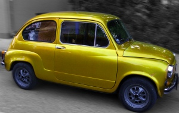
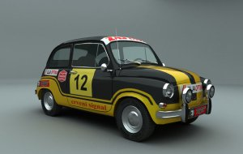
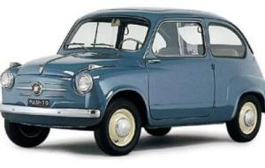

NACIONALNA KLASA
Ovaj nekada veoma popularan automobilu u periodu SFRJ-a, proslavo je svoj 60-i rođendan na platou Muzeja 25. maj. 27. septembra okupili su se obožavaoci ovog modela po četvrti put.
Manifestacija je počela u 10h i imala je za cilj da se očuvaju sećanja našeg kulturnog i industriskog nasleđa. Imali smo i goste iz Nemačke, Austrije, Hrvatske, Slovenije, Bosne i Hercegovine, Makedonije i svih delova Srbije.
Učesnici su bili okruženi pozitivnom energijom, razmnjivali su priče i sećanja kako je u doba Jugoslavije, Fića bio najviđeniji automobil na ulicama. Neki od vlasnika svoje miljenike voze svakodnevno dok neki od njih ih samo provozaju na skup i za neke njima posebne prilike.
Fića (Zastava 600, 750, 850) automobil koji se proizvodio u Kragujevcu od pedesetih godina 20. veka pod licencom italianskog FIAT-a. Postao je nezaobilazno obeležje Jugoslavije kada su u pitanju automobili.